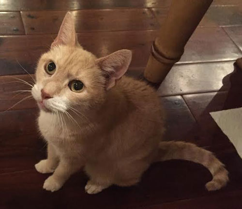

July 2016
Cinnamon started out as a stray 12 years ago, found skinny and hungry outside of Visaggio's Restaurant. Times sure have changed! Nowadays, Cinnamon's interests include a love of traveling in the car and napping solo or preferably in his owner's arms. He is also known to snuggle up in bed at night and during holiday time can often be found laying beneath the Christmas tree." 
|